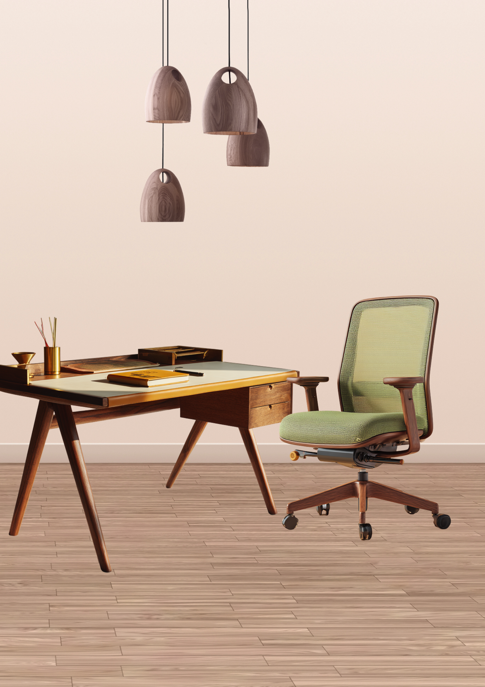
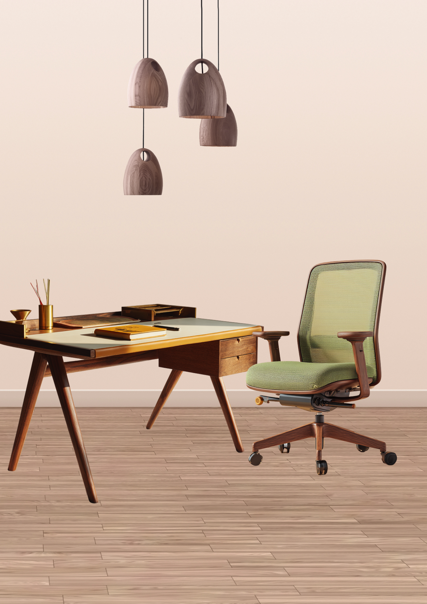

Herencia viva, diseño consciente
Somos Hermanos Jota, un taller que redescubre el arte de hacer muebles con alma. Inspirados en la calidez de los años 60 y guiados por la conciencia sustentable del presente, transformamos maderas certificadas y recuperadas en piezas atemporales. Creemos en la artesanía como puente entre generaciones, donde cada creación se convierte en parte de tu historia.
 
